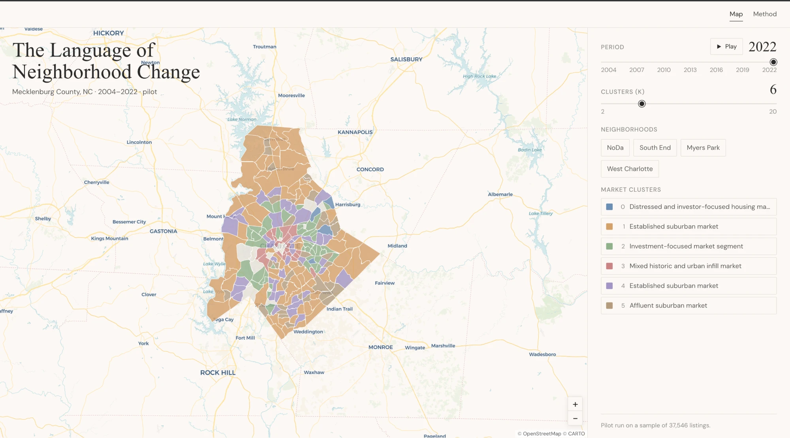
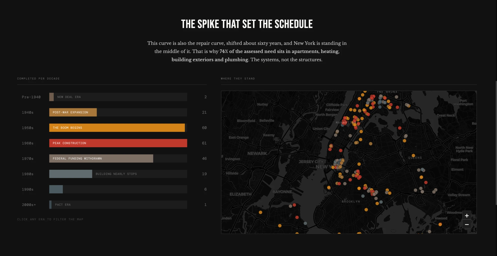
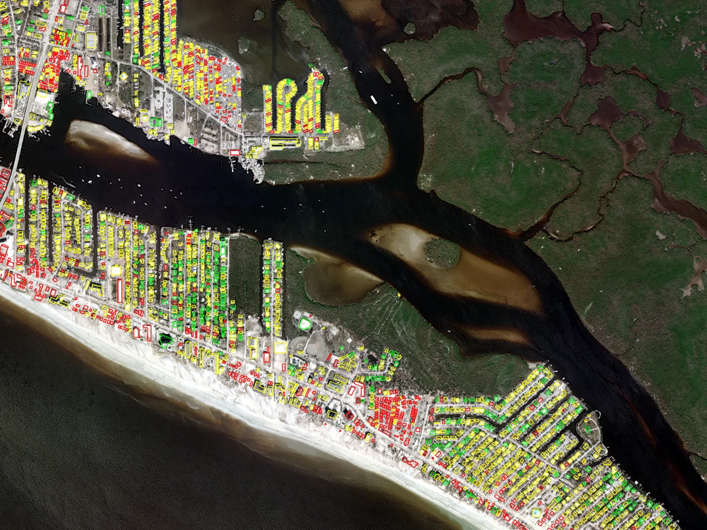
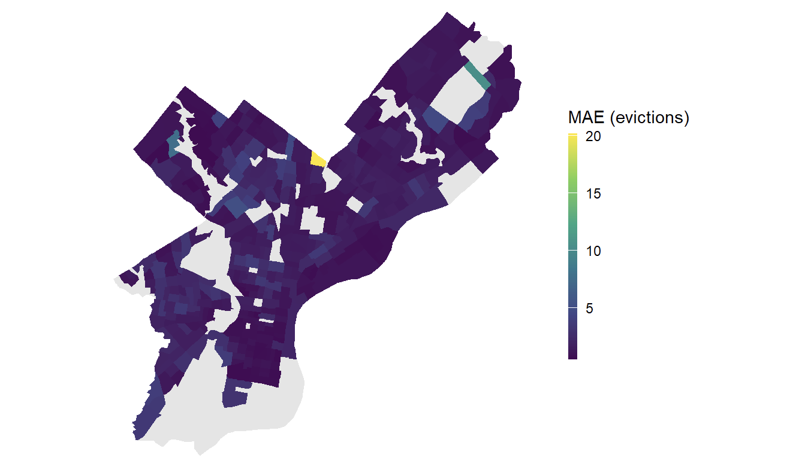
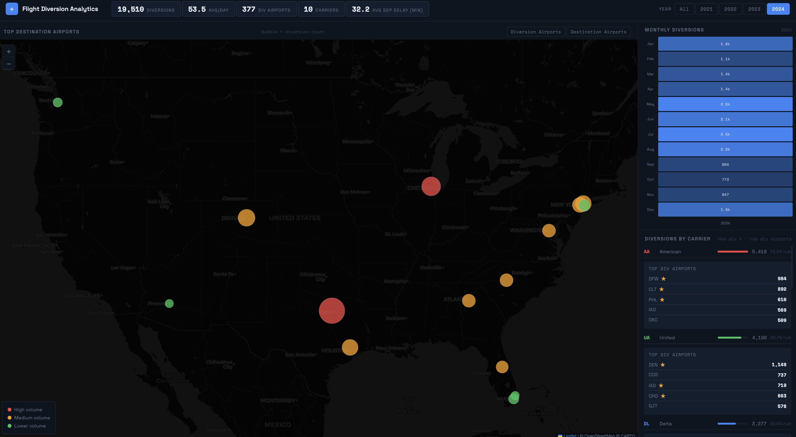
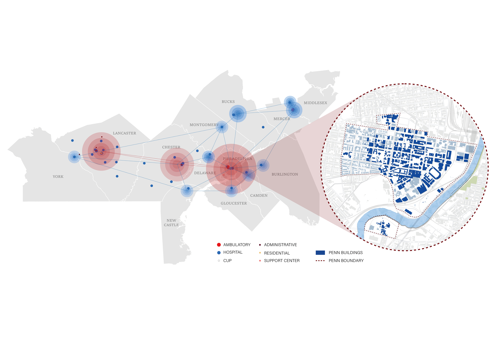
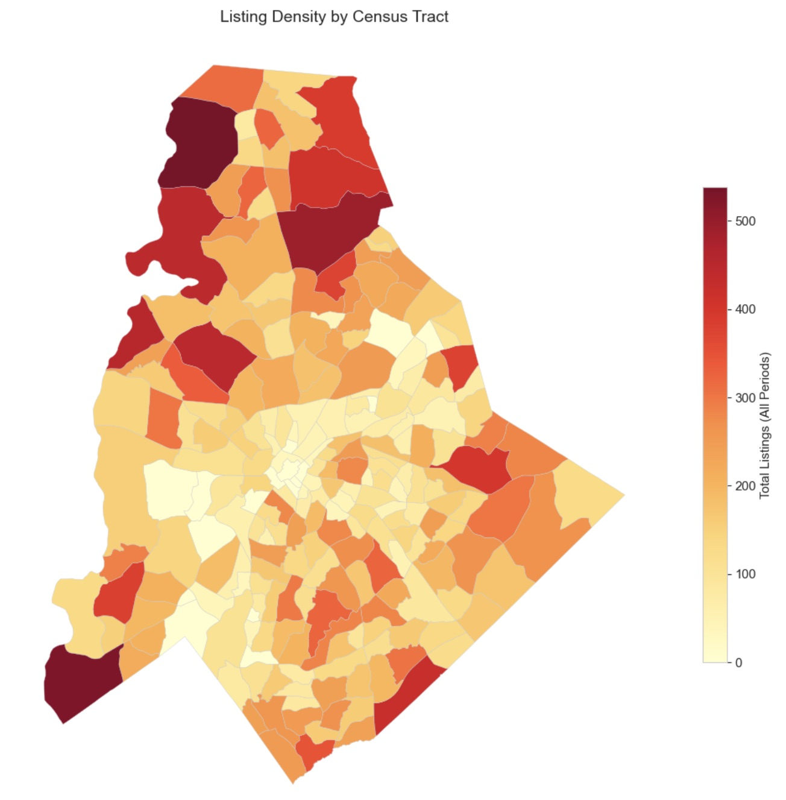
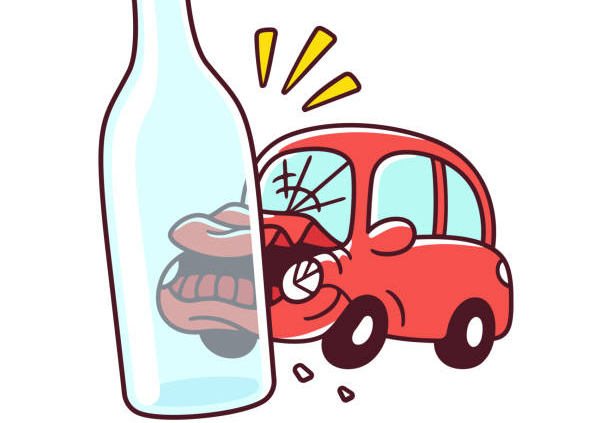
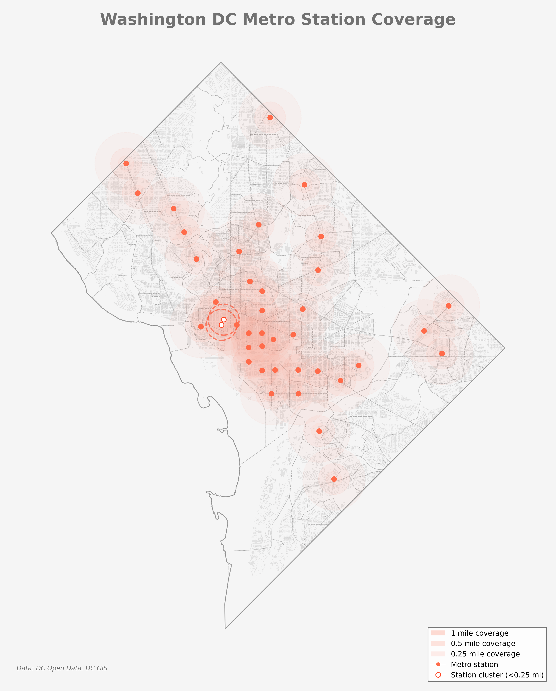

Research & Projects

SOM + sentence embeddings on MLS listing language. Mecklenburg County, NC. AAG 2026.

Mapping when and where New York City's public housing was built, from the New Deal to today.

Fine-tuning the xBD damage model on Maxar imagery of Fort Myers Beach, then classifying 2,298 buildings.

Poisson model with temporal and spatial lags to forecast eviction filings by census tract.

Dashboard analyzing flight diversion patterns using BTS On-Time Performance data.

Mapping the physical footprint of Penn across the greater Philadelphia region.

Batch API pipeline for augmenting sparse tract-period real estate data.

Logistic regression identifying predictors of alcohol-involved crashes in Philadelphia.

Mapping transit accessibility by walking distance across Washington DC.
Analyzing climate finance mechanisms for urban resilience in post-apartheid South Africa.